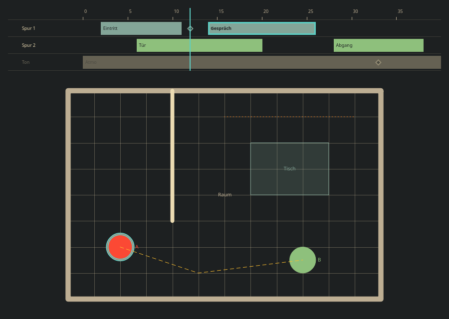

Kante for Klappe: QML gaps
Klappe (floor plans for a film shoot) needs a multi-track timeline and a plan view drawn from data. Both are QML only and generic. Live: qml/demo/Gallery.qml (section "klappe: spuren, plan"); tests: qml/tests/tst_kante_klappe.qml. Screenshot in Kante dark, offscreen render (no icon theme there, so the eye buttons show no icon).

| Component | API | Note |
|---|---|---|
KanteTrackTimeline | duration, position, tracks [{name, label, shown, segments [{from, to, text, selected}], markers [{at, text}]}], trackHeight, labelWidth, hideText, showText, seek(seconds), toggleShown(track), segmentClicked(track, segment), timeAt(x), xAt(s), segmentAt(x, y), markerAt(x, y) | Ruler with a readable step, one row per track, eye button per row, segments as bars with their text, selected one framed wider and bold, markers as diamonds with a tooltip, hidden rows dimmed, playhead in the focus colour. Left / Right one second, Home / End. |
KanteShapeCanvas | contentWidth, contentHeight, gridStep, shapes [{kind, points, radius, width, label, stroke, fill, text, key, selected}], zoom, fitOnLoad, fit(), mapToModel(px, py), mapFromModel(x, y), keyAt(px, py), shapeAt(px, py), shapeClicked(key, x, y), shapeHovered(key, x, y) | One Canvas, back to front. Kinds line, polyline, polygon, circle; stroke solid, dashed, dotted; fill none, solid, tint. Captions at a constant screen size. Wheel or pinch zoom about the pointer, pan with the middle button, space or from empty ground. Topmost shape wins the hit test. |